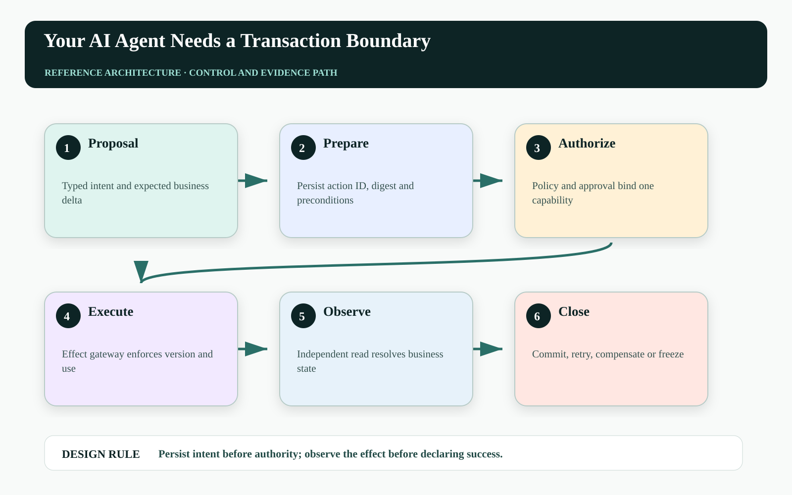
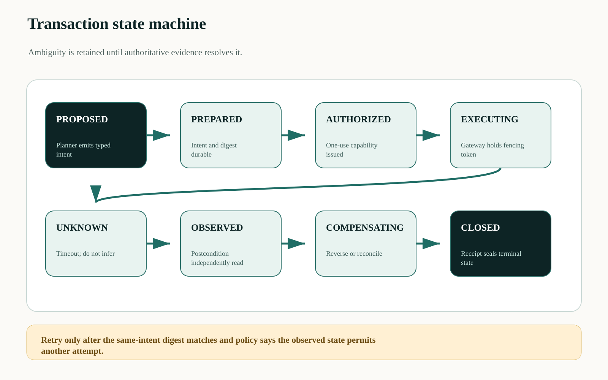
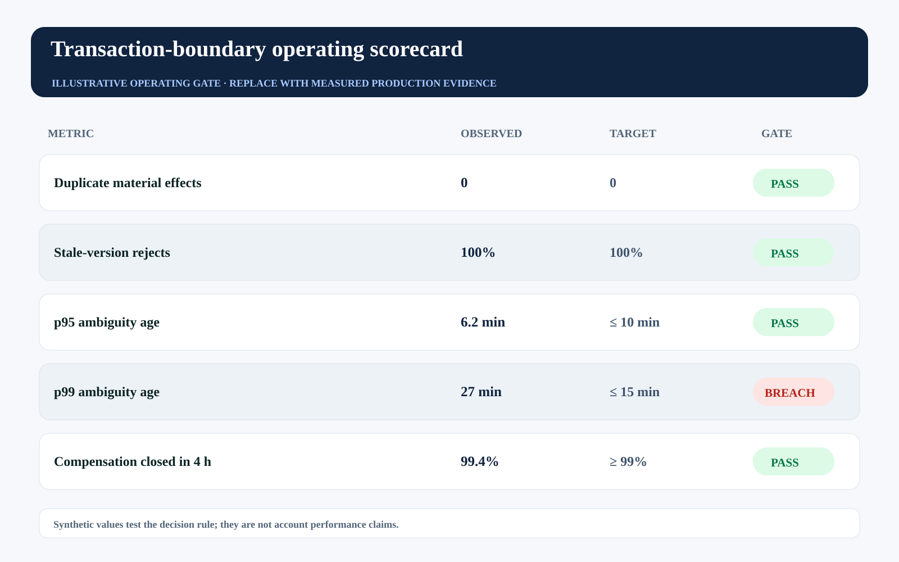

This story was developed with AI writing and visualization assistance. All incidents, thresholds, workloads, and operating values are illustrative unless a source is explicitly cited.
An agent approves one concession, calls one CRM API, times out once, retries once, and creates two downstream credits. Every model response can be reasonable while the business result is wrong.
The defect is not primarily linguistic. The system let a probabilistic planner cross a transactional boundary without a stable action identity, a version precondition, or a durable record of whether the first effect committed. A production agent needs a transaction protocol around its tools, even when the underlying business systems cannot participate in one database transaction.
The agent may propose a transaction. It must not be the component that decides whether an ambiguous transaction happened, retries it, and certifies its own result.

The dangerous state is neither success nor failure#
Remote calls have a third outcome: unknown. A client can lose the response after the server commits. Treating that timeout as failure causes a duplicate; treating it as success may conceal a rejected action. The workflow must preserve ambiguity as a first-class state until authoritative observation resolves it.
A transaction boundary also needs semantic stability. Reusing an idempotency key with a changed amount is not a retry; it is a different intent. The gateway should hash the normalized command and reject the same action identifier when principal, resource, expected version, policy digest, or material payload changes.
Put a durable action coordinator between planning and effects#
The coordinator stores a prepared intent before it exposes an execution token. It binds the accountable principal, agent workload, target resource, expected version, normalized payload hash, policy decision, approval reference, deadline, and compensation class. The effect gateway then accepts only a current, unused transaction capability.
After the call, an independent observer reads the authoritative postcondition. A matching effect closes the action as committed. A proven absence can permit a policy-controlled retry. A divergent effect enters compensation or manual reconciliation. The planner receives the outcome; it does not manufacture it.

Price ambiguity, not just failure#
For action a, a useful retry decision compares the expected cost of waiting, retrying, and escalating:
choose d* = argmin_d { C_delay(d) + P_dup(d) × L_dup + P_miss(d) × L_miss + C_review(d) }
subject to: digest_same ∧ authority_current ∧ version_validThe probabilities are calibrated from gateway and reconciliation evidence, not model confidence. A $5 internal task and a binding $250,000 credit should have different ambiguity deadlines, duplicate-loss estimates, and escalation paths.
| Boundary object | Required field | Why it exists |
|---|---|---|
| Intent | action_id + payload_digest | Separates a retry from changed intent |
| Concurrency | expected_resource_version | Rejects stale writes |
| Authority | single_use capability + expiry | Bounds when the effect may occur |
| Outcome | observed_postcondition | Proves business state independently |
| Recovery | compensation_class + owner | Prevents ownerless ambiguity |
Make the gateway contract explicit#
A tool wrapper should require the transaction context rather than accepting an unstructured instruction:
{
"action_id": "act_01K...",
"principal": "seller:4821",
"resource": "quote:771",
"expected_version": 42,
"command": {"set_discount_bps": 800},
"command_digest": "sha256:...",
"authority": {"lease_id": "lease_91", "max_uses": 1},
"postcondition": {"discount_bps": 800, "version": 43}
}The gateway must atomically claim the action identifier before mutation, retain the first result, compare subsequent payload digests, and expose an observation endpoint. An HTTP 200 is transport evidence; the postcondition is business evidence.
Operate the boundary with tail metrics#
The core SLOs are duplicate-effect rate, stale-version rejection, p95 and p99 ambiguity age, compensation completion, and receipt closure. Mean latency is secondary when the economic exposure sits in a small tail of unresolved actions.
The illustrative scorecard deliberately contains one breach: p99 ambiguity age. A system can achieve zero observed duplicates in a small window and still be unsafe because unresolved actions remain economically live for too long.

| Operating signal | Decision use | Failure interpretation |
|---|---|---|
| Duplicate-effect rate | Stop autonomy when non-zero for material actions | Idempotency or reconciliation defect |
| Ambiguity age by risk | Escalate before economic deadline | Unknown effects are accumulating |
| Version-conflict rate | Diagnose stale planning and contention | Evidence-to-execution gap is too long |
| Compensation completion | Gate wider rollout | Recovery is not keeping pace |
Failure-injection before production#
A design review cannot prove Persist intent before authority; observe the effect before declaring success. The pre-production harness must interrupt the system at the transitions where ownership, authority, evidence, and business state can disagree. The objective is not to maximize a generic pass rate. It is to demonstrate that every material fault produces a bounded state, a named owner, and an admissible recovery transition.
| Injected fault | Experiment | Required evidence |
|---|---|---|
| Delayed or reordered work | Pause the path after PREPARED and release it after UNKNOWN | The stale path cannot manufacture terminal success |
| Authority becomes stale | Advance policy, mode, ownership, or resource version before effect commit | The final gateway rejects the old decision context |
| Evidence is missing or corrupted | Remove one authoritative observation or change its digest | The outcome remains violated, inconclusive, or owned—never guessed |
| Recovery itself fails | Interrupt compensation, handoff, or receipt closure | The action stays visible with an owner, deadline, and next legal transition |
Run the matrix at concurrency, with realistic dependency lag and with the same policy and gateway versions used in the candidate release. Report p95 and p99 resolution alongside the worst unresolved example. Averages can demonstrate throughput; they cannot erase a single material breach. Promotion should require replayable evidence for the controls, not a slide stating that the team considered the risk.
Three questions for the architecture review#
Where is truth decided? Name the authoritative source and the exact component permitted to advance the workflow into a terminal state. If the answer is ‘the agent interprets the tool response,’ the boundary is not yet independent.
Where is authority finally enforced? Follow the command through every queue, adapter, cache, provider, and downstream effect. A policy decision is useful only when the last material write boundary can reject a stale, changed, or excessive action.
What blocks promotion? Convert the scorecard into executable gates with owners and expiry. A breached tail metric must reduce scope, hold the cohort, or enter an approved exception path; it cannot remain decorative telemetry.
A practical implementation sequence#
1. Wrap one material command. Choose a single CRM or billing mutation and require action IDs, expected versions, and postconditions.
2. Build the ambiguity ledger. Persist unknown outcomes with owners, deadlines, evidence, and allowed next transitions.
3. Prove recovery under fault injection. Drop responses after commit, reorder observations, replay requests, and show that the same intent never becomes two effects.
Primary references and boundaries#
RFC 9110 defines HTTP idempotency semantics. AWS's Making retries safe with idempotent APIs explains client request identifiers, semantic equivalence, and atomic recording. These sources do not prescribe this agent protocol; they support its distributed-systems foundations.
This design does not claim a general exactly-once network guarantee. It creates an auditable, domain-specific effect contract using deduplication, concurrency control, observation, and compensation.
The operating conclusion#
Agent reliability begins where generated text ends. If the system cannot distinguish prepared intent, granted authority, attempted execution, observed effect, and completed recovery, it does not have a transaction boundary. It has optimism distributed across APIs.
Which agent action in your estate currently turns a timeout into an unsafe guess?